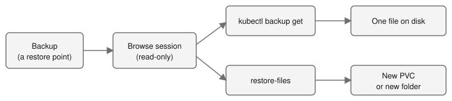

Part 17: Get Back One File from a Backup¶
Tutorial Series: Index | Part 10: Backup and Restore | Part 17
Look inside a backup, read one file, and get back a file that you deleted. You do this without restoring the whole volume. At the end, do the same inside the disk of a VM, without starting the VM. The words restore point and snapshot pool are defined in CONTEXT.md.
Time: about 20 minutes, after Part 10 has two restore points. The VM part adds about 15 minutes. Status: file restore is Experimental. See BACKUP-RECOVERY.md for the full reference.

Prerequisites¶
- You finished Steps 1 to 6 of Part 10. The policy has backed up the volume
filestwice, so it has two restore points, and the podfiles-writerstill runs. Do not do the clean up of Part 10 yet. - The backup gateway is on (the chart default:
backupGateway.enabledandbackupBrowse.enabled). Check it:
- The
kubectl-backupplugin is on your path, as in Part 10. - Your kubeconfig sends a bearer token. The commands that look inside a backup (
ls,get,restore-files) send your token to the gateway. A kubeconfig that logs in with a client certificate (the usual cluster-admin file) fails withsend your Kubernetes token as a bearer token. Log in with a token (for exampleoc login --token=...from the console's Copy login command), or use a ServiceAccount, which the next step makes. - You are an admin of the namespace
pool-tutorial-backup. The built-inadminrole may browse and restore files with no setup. A user with onlyvieworeditmay not.
Step 1: Set variables and list the restore points¶
If you have no token login, make a ServiceAccount that is admin of the tutorial namespace only, and a kubeconfig for it:
export NS=pool-tutorial-backup
export POLICY=tut-nightly
oc create serviceaccount tut-admin -n ${NS}
oc create rolebinding tut-admin -n ${NS} --clusterrole=admin --serviceaccount=${NS}:tut-admin
TOK=$(oc create token tut-admin -n ${NS} --duration=3h)
kubectl config view --raw --minify > /tmp/tut17-kubeconfig
KUBECONFIG=/tmp/tut17-kubeconfig kubectl config set-credentials tut-admin --token="${TOK}"
KUBECONFIG=/tmp/tut17-kubeconfig kubectl config set-context --current --user=tut-admin
export KUBECONFIG=/tmp/tut17-kubeconfig
The built-in admin role of the namespace is all the rights the gateway needs. Then list the restore points:
Expected: the restore points, oldest first, one a line:
The first call opens a session and took 7 to 18 seconds in the lab. Take the first line as the first restore point:
export FIRST=$(kubectl backup ls --policy ${POLICY} --pvc ${NS}/files --restore-points | head -1)
echo ${FIRST}
Do not read lastBackupTime from the policy for this: it is the latest backup, not the first.
Step 2: Look inside the backup¶
The first command opens a browse session. The driver starts a read-only helper pod for it, which takes a few seconds. Later commands reuse the session. The session ends after 15 minutes without use.
kubectl backup ls --policy ${POLICY} --pvc ${NS}/files
kubectl backup ls --policy ${POLICY} --pvc ${NS}/files /a
Expected:
-rw-r--r-- 99:99 944 2026-11-04 18:17 .subvolume-metadata.json
drwxr-xr-x 99:99 4096 2026-11-04 18:11 a/
-rw-r--r-- 99:99 4 2026-11-04 18:11 b
-rw-r--r-- 99:99 0 2026-11-04 18:11 written
The file keep is not there, because Part 10 deleted it before the second backup. .subvolume-metadata.json is the driver's own note about the volume. The owner is 99:99, which is how the backup share shows files; the restored files get the pool's owner. The second command shows 1. Later calls take about a second.
Now look at the oldest restore point:
Expected: a, keep and written (and .subvolume-metadata.json). The file b is not there yet. This is the volume as it was at the first restore point. Use the restore point exactly as --restore-points prints it. Each different restore point text can open its own session, and a namespace may have 2 open at once (see Clean up).
Step 3: Download one file¶
mkdir -p /tmp/restored
kubectl backup get --policy ${POLICY} --pvc ${NS}/files --restore-point ${FIRST} /keep --out /tmp/restored/
cat /tmp/restored/keep
Expected: first. You got back a file that no longer exists on the volume. A file is saved under its own name. A file that exists is never replaced.
To read a file on the screen, use --out -:
Expected: second. With no --restore-point, you read the latest copy. A folder is saved as a .tar file, or unpacked with --extract DIRECTORY.
Step 4: Restore files into a new PVC¶
Download is for a person. To give the files back to a pod, restore them into a PVC. The driver makes a new PVC, sized to the files plus 20%, and copies the files in with a Job.
kubectl backup restore-files --policy ${POLICY} --pvc ${NS}/files --restore-point ${FIRST} \
--path /keep --path /a --to ${NS}/files-back --wait
Expected:
Restore bfr-f78b61bed75c1689-0 asked: 2 paths from pool-tutorial-backup/files (policy tut-nightly, the backup at or before 2026-11-04T18:11:43Z) into a new claim pool-tutorial-backup/files-back
Pending
Measuring measuring the chosen files to size the new claim
Provisioning waiting for the driver to bind the new claim
Restoring copying the files into the new claim
Done restored 2 files, 1 folders and 0 links (12 bytes)
Restore bfr-f78b61bed75c1689-0: Done - restored 2 files, 1 folders and 0 links (12 bytes)
The new claim pool-tutorial-backup/files-back holds the files.
2 files, 1 folders, 0 links, 12 bytes
It took about 70 seconds. The tree is kept, so the files are at /keep and /a/1 in the new PVC. The name of the restore (bfr-...) is yours to note. Each restore keeps its own name, also when you start another one, and kubectl backup restore-files --status NAME shows it until the driver deletes the ended restore, 24 hours after it ended.
Read them with a pod:
cat <<EOF | oc apply -n ${NS} -f -
apiVersion: v1
kind: Pod
metadata:
name: files-back-check
spec:
containers:
- name: check
image: registry.access.redhat.com/ubi9/ubi-minimal:latest
command: ["/bin/bash", "-c", "find /data -type f | sort; cat /data/keep /data/a/1; sleep 600"]
volumeMounts:
- name: data
mountPath: /data
volumes:
- name: data
persistentVolumeClaim:
claimName: files-back
EOF
oc wait -n ${NS} --for=condition=Ready pod/files-back-check --timeout=300s
oc logs -n ${NS} files-back-check
Expected: /data/a/1 and /data/keep, then first twice. The file a/1 has the old content (first), not the content now on the volume (second).
A restore never writes over a file that exists. A claim name that exists is refused.
Step 5: Restore files into a PVC that exists¶
Use --existing to put the files into a new folder of a PVC that you already use. Nothing else in that PVC changes.
kubectl backup restore-files --policy ${POLICY} --pvc ${NS}/files --restore-point ${FIRST} \
--path /keep --to ${NS}/files --existing --wait
Expected: Done, and a line such as The files are in the folder restored-tut-nightly-20261104T181143Z of the claim pool-tutorial-backup/files. The folder name holds the policy and the restore point that was restored, with the time written without dashes and colons. Check it in the running pod:
D=$(oc exec -n ${NS} files-writer -- ls /data | grep '^restored-')
echo ${D}
oc exec -n ${NS} files-writer -- cat /data/${D}/keep
Expected: the folder name, then first. The listing of /data has the new folder next to a, b and written.
Your own /data/a/1 and /data/b did not change. To put a file back in its old place, copy it from the restored folder yourself. The driver never does that for you.
Step 6: Do it in the console¶
- Open Storage, then IBM VPC File Pools, then the Backups tab.
- Open the policy
tut-nightly. In the menu of the volumefiles, choose Browse files. - The page shows "Starting the reader", then the folders. The picker above the table offers Latest copy and every restore point. Choose the first restore point.
- Open
a. Tick1and press Download, or tick files and folders and press Restore selected. - In the dialog, choose A new claim, type the name
files-console, and confirm. The dialog shows the phase (Measuring, Copying the files) and then Done, with a link to the claim.
Expected: oc get pvc -n pool-tutorial-backup files-console shows Bound. Console restore asks the same questions as restore-files, with the same rights. Part 16 shows the rest of the Backups tab: Part 16.
Step 7: Files inside a VM disk¶
The backup of a VM disk is one raw disk. The driver reads the file systems inside it with a small read-only appliance, so you can get back one file of the guest without starting the VM.
This step needs a VM with a disk that a BackupPolicy backs up (see Part 10), on a pool that sets defaultUID and defaultGID (use 107 for both), and VM-disk browsing on in the install. The first backup of a 32 GiB VM disk took 7 to 12 minutes in the lab, and LAST BACKUP in kubectl backup list can stay - for several minutes after the backup ends:
helm upgrade ibm-vpc-file-pool-csi charts/ibm-vpc-file-pool-csi -n kube-system \
--reset-then-reuse-values \
--set backupBrowse.guest.enabled=true \
--set backupBrowse.guest.image.repository=REGISTRY/browse-guest \
--set backupBrowse.guest.image.tag=TAG
Set backupBrowse.guest.kvmDevice=true where the nodes have the KVM device. A first listing then takes about 25 seconds instead of about 45. To browse or restore a VM disk that is in COS, backupBrowse.cos must also be on (the default).
Set the claim of the VM disk and list it. The first listing shows the file systems of the guest as folders:
export VMNS=vms
export DISK=my-vm-rootdisk
kubectl backup ls --policy ${POLICY} --pvc ${VMNS}/${DISK}
Expected: one folder for each partition of the guest, with its type and label. The first listing took 16 to 20 seconds in the lab. Here is the list for a CentOS Stream 9 disk. A volume that cannot be read (BitLocker, LUKS, swap) is listed with the reason and cannot be opened.
dr-xr-xr-x 0:0 1048576 0001-01-01 00:00 sda1/ (not readable) # No file system that the reader knows was found on this volume.
dr-xr-xr-x 0:0 209489920 0001-01-01 00:00 sda2/ # vfat ESP
dr-xr-xr-x 0:0 1006632960 0001-01-01 00:00 sda3/ # xfs boot
dr-xr-xr-x 0:0 20122152960 0001-01-01 00:00 sda4/ # xfs root
The folder name is the one to give to --fs below. Use the name from your list: a disk with other partitions has other names.
Open a folder inside one file system, download a file, and restore a folder. --fs puts the file system name in front of the path:
kubectl backup ls --policy ${POLICY} --pvc ${VMNS}/${DISK} --fs sda4 /etc
kubectl backup get --policy ${POLICY} --pvc ${VMNS}/${DISK} --fs sda4 /etc/hosts --out /tmp/restored/
kubectl backup restore-files --policy ${POLICY} --pvc ${VMNS}/${DISK} --fs sda4 \
--path /etc/hosts --to ${VMNS}/vm-files --wait
Expected: the folder list (one line each, as in ls -l), then the file /tmp/restored/hosts, then the restore progress:
Restore bfr-8c79aeb7900de297-0 asked: 1 paths from tutf-vms/my-vm-rootdisk (policy tutf-nightly, the latest copy) into a new claim tutf-vms/vm-files
Pending
Measuring measuring the chosen files to size the new claim
Provisioning waiting for the driver to bind the new claim
Restoring copying the files into the new claim
Done restored 1 files, 2 folders and 0 links (158 bytes)
Restore bfr-8c79aeb7900de297-0: Done - restored 1 files, 2 folders and 0 links (158 bytes)
The new claim tutf-vms/vm-files holds the files.
1 files, 2 folders, 0 links, 158 bytes
The pool of the target claim must set defaultUID and defaultGID (a pool for VMs uses 107 for both). Without them the restore fails at once with a message that names the pool and says to set defaultUID and defaultGID on the FileSharePool (the pool in the Tutorial 10 example sets neither). Set them on the pool, delete the new claim, and start again.
In the new claim the file is at /sda4/etc/hosts: the name of the file system is kept at the top.
Things to know:
- The next backup of that disk waits while a session is open, for at most 2 hours. A VM backup copies all its disks together, so they wait together. Close the session with
kubectl backup browse --close NAMEwhen you finish. - A running VM is backed up as a crash copy unless the freeze worked. The command prints
note: ...on standard error when a file system was read without its journal. The newest changes may be missing. - Speed. Each folder you open and each file you read starts the appliance (about 1.5 seconds with KVM, about 12 without). Restore the files you need. To get back thousands of small files, restore the whole disk (Part 10).
- From COS. Add
--from-costo the same commands. Only the newest restore point of an export can be read, and the export must stay in COS for at least 3 more hours.
Who may do this¶
| You | Browse and restore files of namespace N |
|---|---|
Admin of N (the built-in admin role) |
Yes, with no setup |
A user with only view or edit in N |
No |
A user with a RoleBinding to backup-file-reader in N |
Yes |
| Admin of another namespace | No |
To let a person read the backups of N:
A restore into a new claim also needs create on persistentvolumeclaims in the target namespace. A restore into an existing claim also needs update on persistentvolumeclaims and create on pods there. Every start, download and restore writes an audit Event that holds the user and the paths, never the contents.
Clean up¶
unset KUBECONFIG
oc delete pod -n ${NS} files-back-check --ignore-not-found --force --grace-period=0
oc delete pvc -n ${NS} files-back files-console --ignore-not-found
oc get backupfilerestore,backupbrowse
That last command lists every restore and browse session in the cluster, including those of other people. Delete only the ones you made, by name:
Never use --all on a shared cluster.
unset KUBECONFIG comes first, because the ServiceAccount may not delete cluster-wide objects. Remove the folder /tmp/restored and the file /tmp/tut17-kubeconfig too. BackupFileRestore and BackupBrowse are cluster-wide, not in the namespace, so deleting the namespace does not remove them, and a browse pod that still runs blocks the delete of the pool. The ServiceAccount goes with the namespace. A browse session also ends by itself after 15 minutes without use. Then clean up Part 10.
What you learned¶
kubectl backup lsandgetread one file from any restore point, without a restore of the volume.kubectl backup restore-filescopies chosen files into a new PVC, or into a new folder of a PVC that exists. It never writes over a file.- The console does the same with Browse files and Restore selected.
- The disk of a VM is browsed and restored by file system, and the next backup of that disk waits while a session is open.
- The built-in
adminrole of the namespace has the right with no setup. Others needbackup-file-reader.
Next¶
- Part 10: Backup and Restore for the whole-volume restore and the clean up.
- Part 9: A COS bucket for backups to keep backups outside the VPC.